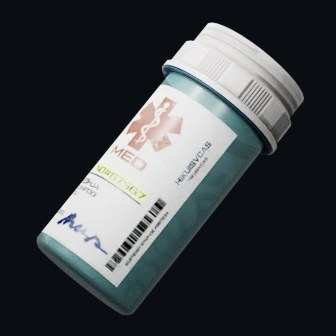
Antibiotiques en flacon
Bottled Antibiotics · Consumables
Consommable de raid. Sa fiche en jeu ne détaille pas l’effet. Ce qui est sûr : il occupe de la place, et cette place est un choix.
6 547 Tekniqgrade 2 peu commun · 6 547 par case
Le temps d’activation est la statistique la plus importante d’un soin : il se paie en secondes d’exposition. Les valeurs de soin et de durabilité sont dans les fiches.
Un bandage soigne une plaie, un antidouleur supprime les effets visuels de la douleur, un kit chirurgical retire un débuff d’une partie du corps, un kit de réparation remet une protection en état en pleine partie. Le choix se fait sur ce qu’on sait gérer : mieux vaut deux petits soins rapides qu’un gros soin lent quand on est à découvert.

Bottled Antibiotics · Consumables
Consommable de raid. Sa fiche en jeu ne détaille pas l’effet. Ce qui est sûr : il occupe de la place, et cette place est un choix.
6 547 Tekniqgrade 2 peu commun · 6 547 par case
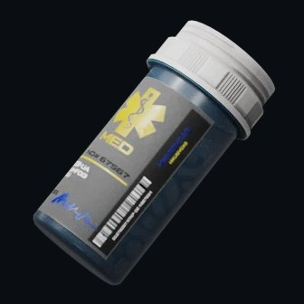
DVE Painkiller · Consumables
Consommable de raid. Aucun chiffre d’effet n’est publié pour cet objet. À toi de décider s’il mérite une case dans le sac.
22 560 Tekniqgrade 4 épique · 22 560 par case
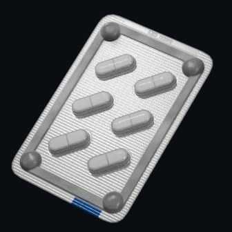
Extended-Release Painkiller · Consumables
Consommable de raid. Le jeu ne publie pas son effet chiffré ; son intérêt se juge à la place qu’il prend et au moment où tu l’utilises.
1 947 Tekniqgrade 1 commun · 1 947 par case
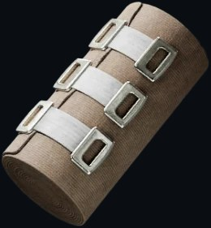
Elastic Bandage · Consumables
Activation en 3 secondes. 1×1 case(s) dans le sac.
1 043 Tekniqgrade 1 commun · 1 043 par case
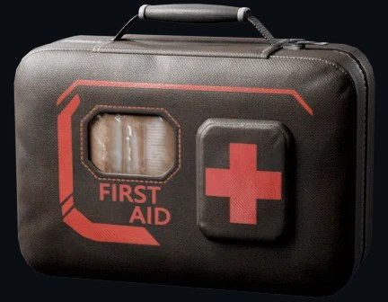
Field Med Crate · Consumables
Rend 30 points de vie par seconde pendant l’utilisation, activation en 3,5 secondes.
99 820 Tekniqgrade 5 légendaire · 24 955 par case
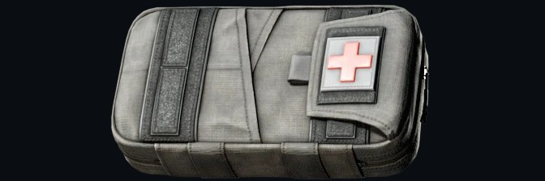
Outdoor Med Crate · Consumables
Rend 20 points de vie par seconde pendant l’utilisation, activation en 4 secondes.
46 426 Tekniqgrade 4 épique · 15 475 par case
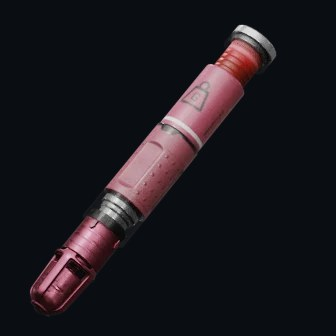
Stamina Activator · Consumables
Consommable de raid. 1×1 case(s) dans le sac.
23 628 Tekniqgrade 3 rare · 23 628 par case
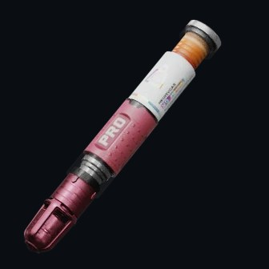
Stamina Booster · Consumables
Consommable de raid. 1×1 case(s) dans le sac.
94 057 Tekniqgrade 4 épique · 94 057 par case
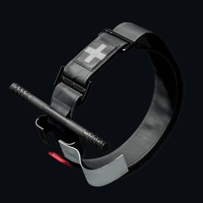
CAT Tourniquet · Consumables
Activation en 2,5 secondes. 1×1 case(s) dans le sac.
2 491 Tekniqgrade 1 commun · 2 491 par case
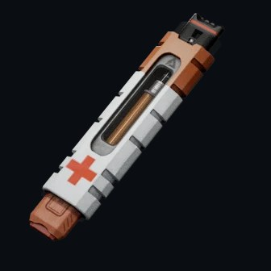
Enhanced Injector · Consumables
Rend 12 points de vie par seconde pendant l’utilisation, activation en 3 secondes. 1×1 case(s) dans le sac.
6 768 Tekniqgrade 2 peu commun · 6 768 par case
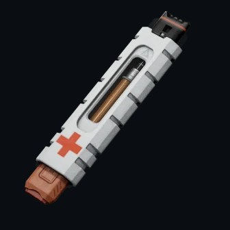
Basic Injector · Consumables
Rend 5 points de vie par seconde pendant l’utilisation, activation en 3,5 secondes. 1×1 case(s) dans le sac.
1 583 Tekniqgrade 1 commun · 1 583 par case
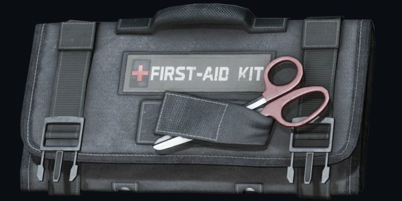
DEK Field Surgical Kit · Consumables
Activation en 5 secondes. 1×3 case(s) dans le sac.
25 086 Tekniqgrade 4 épique · 8 362 par case
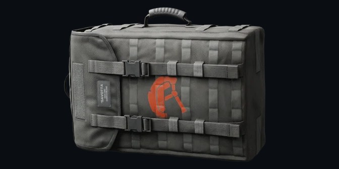
DIY Helmet Repair Kit · Consumables
Consommable de raid. Le jeu ne publie pas son effet chiffré ; son intérêt se juge à la place qu’il prend et au moment où tu l’utilises.
17 406 Tekniqgrade 3 rare · 8 703 par case
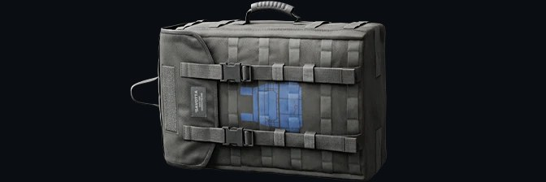
DIY Vest Repair Kit · Consumables
Consommable de raid. Sa fiche en jeu ne détaille pas l’effet. Ce qui est sûr : il occupe de la place, et cette place est un choix.
15 895 Tekniqgrade 3 rare · 7 948 par case
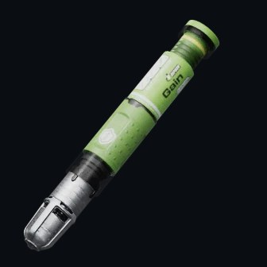
M1 Muscle Booster · Consumables
Consommable de raid. Le jeu ne publie pas son effet chiffré ; son intérêt se juge à la place qu’il prend et au moment où tu l’utilises.
5 022 Tekniqgrade 3 rare · 5 022 par case
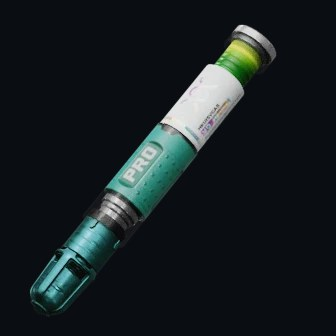
M2 Muscle Injector · Consumables
Consommable de raid. Aucun chiffre d’effet n’est publié pour cet objet. À toi de décider s’il mérite une case dans le sac.
12 685 Tekniqgrade 4 épique · 12 685 par case
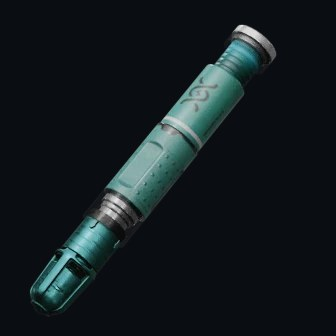
Norepinephrine · Consumables
Consommable de raid. Le jeu ne publie pas son effet chiffré ; son intérêt se juge à la place qu’il prend et au moment où tu l’utilises.
3 700 Tekniqgrade 3 rare · 3 700 par case
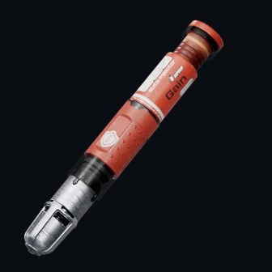
OE2 Combat Stimulant · Consumables
Consommable de raid. Sa fiche en jeu ne détaille pas l’effet. Ce qui est sûr : il occupe de la place, et cette place est un choix.
26 933 Tekniqgrade 3 rare · 26 933 par case
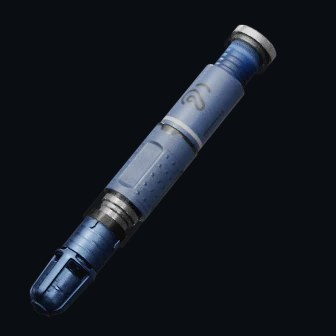
Perception Activator · Consumables
Consommable de raid. Aucun chiffre d’effet n’est publié pour cet objet. À toi de décider s’il mérite une case dans le sac.
15 684 Tekniqgrade 3 rare · 15 684 par case
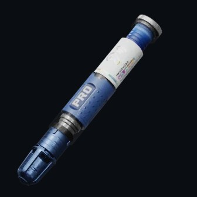
Perception Booster · Consumables
Consommable de raid. Le jeu ne publie pas son effet chiffré ; son intérêt se juge à la place qu’il prend et au moment où tu l’utilises.
33 427 Tekniqgrade 4 épique · 33 427 par case
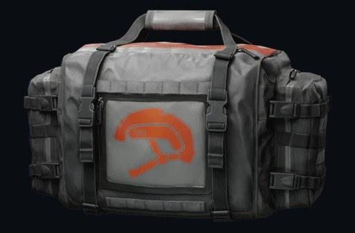
Precision Helmet Repair Kit · Consumables
Consommable de raid. Aucun chiffre d’effet n’est publié pour cet objet. À toi de décider s’il mérite une case dans le sac.
151 442 Tekniqgrade 5 légendaire · 50 481 par case

Precision Vest Repair Kit · Consumables
Consommable de raid. Le jeu ne publie pas son effet chiffré ; son intérêt se juge à la place qu’il prend et au moment où tu l’utilises.
130 025 Tekniqgrade 5 légendaire · 32 506 par case
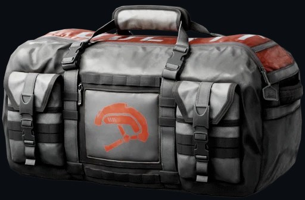
Premium Helmet Repair Combo · Consumables
Consommable de raid. Le jeu ne publie pas son effet chiffré ; son intérêt se juge à la place qu’il prend et au moment où tu l’utilises.
289 617 Tekniqgrade 6 mythique · 72 404 par case
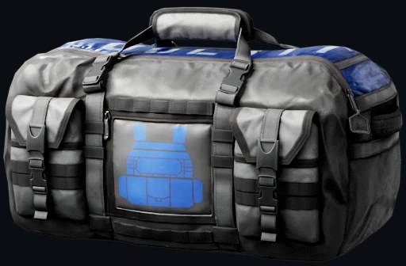
Premium Vest Repair Combo · Consumables
Consommable de raid. Le jeu ne publie pas son effet chiffré ; son intérêt se juge à la place qu’il prend et au moment où tu l’utilises.
532 445 Tekniqgrade 6 mythique · 133 111 par case
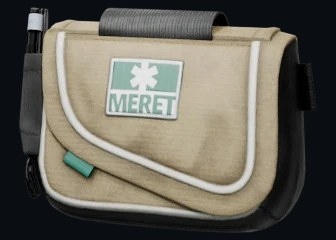
Simple Surgical Kit · Consumables
Activation en 10 secondes.
2 339 Tekniqgrade 1 commun · 2 339 par case

Standard Helmet Repair Kit · Consumables
Consommable de raid. Sa fiche en jeu ne détaille pas l’effet. Ce qui est sûr : il occupe de la place, et cette place est un choix.
41 294 Tekniqgrade 4 épique · 20 647 par case
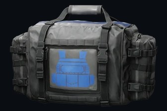
Standard Vest Repair Kit · Consumables
Consommable de raid. Sa fiche en jeu ne détaille pas l’effet. Ce qui est sûr : il occupe de la place, et cette place est un choix.
67 409 Tekniqgrade 4 épique · 22 470 par case
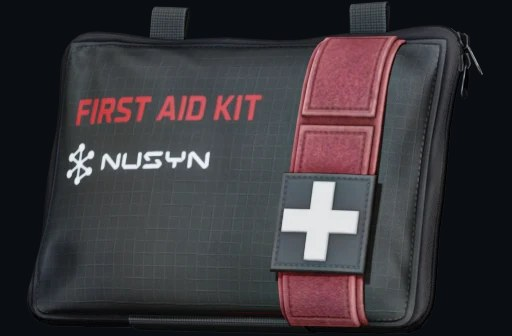
Tactical Quick-Use Surgical Kit · Consumables
Activation en 7 secondes.
8 575 Tekniqgrade 2 peu commun · 4 288 par case
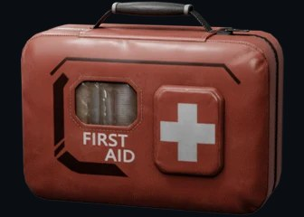
Field First Aid Kit · Consumables
Rend 20 points de vie par seconde pendant l’utilisation, activation en 6 secondes. 1×2 case(s) dans le sac.
13 454 Tekniqgrade 3 rare · 6 727 par case
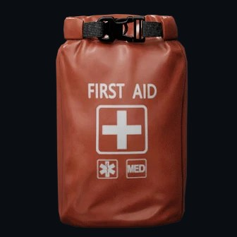
Vehicle First Aid Kit · Consumables
Rend 6 points de vie par seconde pendant l’utilisation, activation en 5 secondes. 1×1 case(s) dans le sac.
3 010 Tekniqgrade 1 commun · 3 010 par case
Valeurs de référence relevées hors direct : elles servent à comparer deux objets, pas à fixer un prix de vente. Le nom d’origine reste affiché sous chaque fiche pour que la correspondance avec l’écran du jeu soit immédiate.